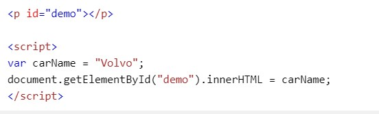

JavaScript Değişkenler
JavaScript değişkenleri, veri değerlerini saklamak için kullanılır.
Bu örnekte, x, y ve z değişkenlerdir:
var x = 5;
var y = 6;
var z = x + y;
Örneği incelemek için tıklayın
NOT : Kodu incelemek için örnek sayfasındayken CTRL+U tuşuna basınız. Karşınıza çıkan ekrandan kodları inceleyebilirsiniz.
Yukarıdaki örnekte şunları bekleyebilirsiniz:
x, 5 değerini saklar
y, 6 değerini saklar
z, 11 değerini saklar
Cebir İşlemleri
Bu örnekte, fiyat1, fiyat2 ve toplam değişkenlerdir:
var price1 = 5;
var price2 = 6;
var total = price1 + price2;
Örneği incelemek için tıklayın
NOT : Kodu incelemek için örnek sayfasındayken CTRL+U tuşuna basınız. Karşınıza çıkan ekrandan kodları inceleyebilirsiniz.
Programlamada, tıpkı cebir gibi, değerleri tutmak için değişkenler (fiyat1 gibi) kullanırız.
Programlamada, tıpkı cebirde olduğu gibi, ifadelerde değişkenler kullanıyoruz (toplam = fiyat1 + fiyat2).
Yukarıdaki örnekte, toplamı 11 olarak hesaplayabilirsiniz.
JavaScript Tanımlayıcıları
Tüm JavaScript değişkenleri benzersiz adlarla tanımlanmalıdır.
Bu benzersiz adlara tanımlayıcı denir.
Tanımlayıcılar kısa adlar (x ve y gibi) veya daha fazla açıklayıcı ad (yaş, toplam, toplam Hacim) olabilir.
Değişkenler için adlar oluşturmak için genel kurallar (benzersiz tanımlayıcılar):
İsimler harf, rakam, alt çizgi ve dolar işareti içerebilir.
İsimler bir harfle başlamalıdır
İsimler de $ ve _ ile başlayabilir (ancak bu eğitimde kullanmayacağız)
İsimler büyük / küçük harfe duyarlıdır (y ve Y farklı değişkenlerdir)
Ayrılmış kelimeler (JavaScript anahtar kelimeleri gibi) ad olarak kullanılamaz
JavaScript Atama Operatörü
JavaScript'te eşittir işareti (=), "eşittir" işleci değil, "atama" işlecidir.
Bu cebirden farklıdır. Cebirde aşağıdakiler mantıklı değildir:
x = x + 5
Ancak JavaScript'te mükemmel bir anlam ifade eder: x + 5 değerini x'e atar.
(X + 5 değerini hesaplar ve sonucu x değerine getirir. X değeri 5 artar.)
JavaScript Veri Tipleri
JavaScript değişkenleri 100 gibi sayıları ve "John Doe" gibi metin değerlerini içerebilir.
Programlamada metin değerlerine metin dizeleri denir.
JavaScript birçok veri türünü işleyebilir, ancak şimdilik sadece sayıları ve dizeleri düşünün.
Dizeler çift veya tek tırnak içine alınır. Sayılar tırnak işaretleri olmadan yazılır.
Tırnak içine bir sayı koyarsanız, metin dizesi olarak değerlendirilir.
var pi = 3.14;
var kisi = "John Doe";
var cevap = 'Yes I am!';
Örneği incelemek için tıklayın
NOT : Kodu incelemek için örnek sayfasındayken CTRL+U tuşuna basınız. Karşınıza çıkan ekrandan kodları inceleyebilirsiniz.
JavaScript Değişkenlerini Bildirme (Oluşturma)
JavaScript'te bir değişken oluşturmaya "değişken" bildirme denir.
Var anahtar sözcüğüyle bir JavaScript değişkeni bildirirsiniz:
var carName;
Bildirimden sonra, değişkenin değeri yoktur (teknik olarak tanımsız değere sahiptir).
Değişkene bir değer atamak için eşittir işaretini kullanın:
carName = "Volvo";
Değişkeni bildirirken ayrıca bir değer atayabilirsiniz:
var carName = "Volvo";
Aşağıdaki örnekte, carName adlı bir değişken oluşturuyoruz ve buna "Volvo" değerini atıyoruz.

Örneği incelemek için tıklayın
NOT : Kodu incelemek için örnek sayfasındayken CTRL+U tuşuna basınız. Karşınıza çıkan ekrandan kodları inceleyebilirsiniz.
JavaScript Bir Deyim, Birçok Değişken
Bir ifadede birçok değişkeni bildirebilirsiniz.
İfadeyi var ile başlatın ve değişkenleri virgülle ayırın:
var person = "John Doe", carName = "Volvo", price = 200;
Örneği incelemek için tıklayın
NOT : Kodu incelemek için örnek sayfasındayken CTRL+U tuşuna basınız. Karşınıza çıkan ekrandan kodları inceleyebilirsiniz.
Bir bildirim birden çok satıra yayılabilir:
var person = "John Doe",
carName = "Volvo",
price = 200;
Örneği incelemek için tıklayın
NOT : Kodu incelemek için örnek sayfasındayken CTRL+U tuşuna basınız. Karşınıza çıkan ekrandan kodları inceleyebilirsiniz.
JavaScript Değer = tanımsız
Bilgisayar programlarında, değişkenler genellikle bir değer olmadan bildirilir. Değer, hesaplanması gereken bir şey veya daha sonra kullanıcı girişi gibi sağlanacak bir şey olabilir.
Değersiz bildirilen bir değişkenin değeri undefined olur.
CarName değişkeni, bu ifadenin yürütülmesinden sonra undefined değerine sahip olacaktır:
var carName;
Örneği incelemek için tıklayın
NOT : Kodu incelemek için örnek sayfasındayken CTRL+U tuşuna basınız. Karşınıza çıkan ekrandan kodları inceleyebilirsiniz.
JavaScript Değişkenlerini Yeniden Bildirme
Bir JavaScript değişkenini yeniden bildirirseniz, değerini kaybetmez.
CarName değişkeni şu ifadelerin yürütülmesinden sonra da "Volvo" değerine sahip olacaktır:
var carName = "Volvo";
var carName;
Örneği incelemek için tıklayın
NOT : Kodu incelemek için örnek sayfasındayken CTRL+U tuşuna basınız. Karşınıza çıkan ekrandan kodları inceleyebilirsiniz.
JavaScript Aritmetik
Cebirde olduğu gibi, = ve + gibi işleçleri kullanarak JavaScript değişkenleriyle aritmetik yapabilirsiniz:
var x = 5 + 2 + 3;
Örneği incelemek için tıklayın
NOT : Kodu incelemek için örnek sayfasındayken CTRL+U tuşuna basınız. Karşınıza çıkan ekrandan kodları inceleyebilirsiniz.
Ayrıca dizeler de ekleyebilirsiniz, ancak dizeler birleştirilecektir:
var x = "John" + " " + "Doe";
Örneği incelemek için tıklayın
NOT : Kodu incelemek için örnek sayfasındayken CTRL+U tuşuna basınız. Karşınıza çıkan ekrandan kodları inceleyebilirsiniz.
Ayrıca şunu da deneyin:
var x = "5" + 2 + 3;
Örneği incelemek için tıklayın
NOT : Kodu incelemek için örnek sayfasındayken CTRL+U tuşuna basınız. Karşınıza çıkan ekrandan kodları inceleyebilirsiniz.
Şimdi şunu deneyin:
var x = 2 + 3 + "5";
Örneği incelemek için tıklayın
NOT : Kodu incelemek için örnek sayfasındayken CTRL+U tuşuna basınız. Karşınıza çıkan ekrandan kodları inceleyebilirsiniz.